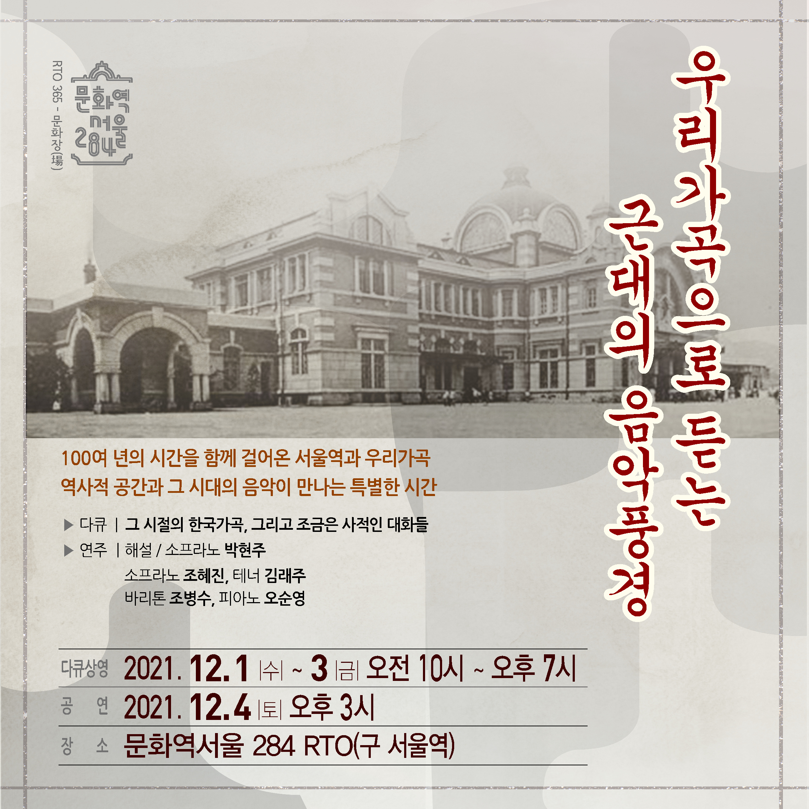

2021 RTO 365 문화장(場)의 여덟 번째 프로그램은 비트윈뮤직의 <우리 가곡으로 듣는 근대의 음악 풍경> 입니다.
문화역서울284(구 서울역)와 우리 가곡은 근대적 감성을 전하며 시작되었고,
역사와 문화가 어우러졌으며, 과거와 현재, 미래가 공존하는 등 100여 년의 시간을 함께 걸어왔습니다.
우리의 시와 문학으로 시대적 감성을 표현하며 역사와 문화를 음악으로 전하는 100여 년 역사의 우리 가곡.
그리고 경성역의 시초이자 역사의 시작으로 서울에 근대적 감성을 전했던 서울역.
그 변해온 시간이 나란한 문화역서울284에서 한국가곡 이야기를 담은 다큐멘터리를 상연하고 공연합니다.
[다큐 상영]
그 시절의 한국 가곡, 그리고 조금은 사적인 대화들
한국 가곡의 역사, 과거 음악계의 풍경을 이야기로 듣는 다큐멘터리를 통해
한국 가곡 연주자, 음악학자 등 한국 가곡 전문가들이 말하는 한국 가곡 이야기와 곡들을 감상할 수 있는 시간을 준비했습니다.
- 일시: 2021.12.1.(수)~12.3(금) 오전 10시~오후 7시(1일 9회)
- 장소: 문화역서울284 RTO
* 최대 30인 입장 가능
* 매 시각 정각에 다큐멘터리 영상이 시작됩니다.(러닝타임 40분)
- 예약: http://bit.ly/betweenmusic_film
[공연]
- 프로그램
봉선화(홍난파), 동무생각(박태준), 고향생각(현제명), 고향(채동선), 코스모스를 노래함,
꽃구름 속에(이흥렬), 가고파, 내마음(김동진), 뱃노래, 새타령(조두남), 동심초(김성태),
산유화, 진달래꽃(김순남), 금잔디(이건우), 고풍의상(윤이상), 달밤(나운영), 추억(최영섭)
- 공연에 관한 이야기가 더 궁금하신 분들을 위한 오디오클립 - 음악회 가는 길
http://naver.me/xKYOFZvw
- 일시: 2021.12.4.(토) 오후 3시
- 장소: 문화역서울284 RTO
*공연 전 오후 2시부터 다큐멘터리 관람 가능
*공연 예약은 다큐 예약과 별도로 진행됩니다.(러닝타임 70분)
*공연 시작 1시간 전부터 티켓을 배부하며, 좌석은 당일 현장에서 지정됩니다.
- 출연진
해설/소프라노 박현주
서울대학교 음악대학 성악과 및 동대학원 졸업
미국 보스턴콘서바토리 전문연주자과정 졸업
한국외국어대학교 글로벌문화콘텐츠학과 박사과정 수료
현 비트윈뮤직 대표, 가천대, 단국대 출강, 서울사이버대 겸임교수
소프라노 조혜진
서울대학교 음악대학 성악과 졸업
독일 베를린 국립예술대학, 쾰른국립음대 졸업
현 서울대학교, 목원대학교, 선화예고 출강
테너 김래주
서울대학교 음악대학 성악과 졸업
독일 쾰른국립음대 석사
뷔르츠부르크 국립음대 최고연주자과정 졸업
현 서울대학교, 가천대학교, 상명대학교 출강
바리톤 조병수
서울대학교 음악대학 성악과 졸업
미국 매네스 음대 석사 및 최고연주자과정 졸업
현 예원학교, 서울예고 출강
피아노 오순영
서울대학교 음악대학 기악과 졸업
미국 샌프란시스코 컨서바토리 석사
미시간 음대 박사 졸업(반주 및 실내악)
현 국민대학교, 숙명여자대학교 출강
[영상으로 둘러보기]